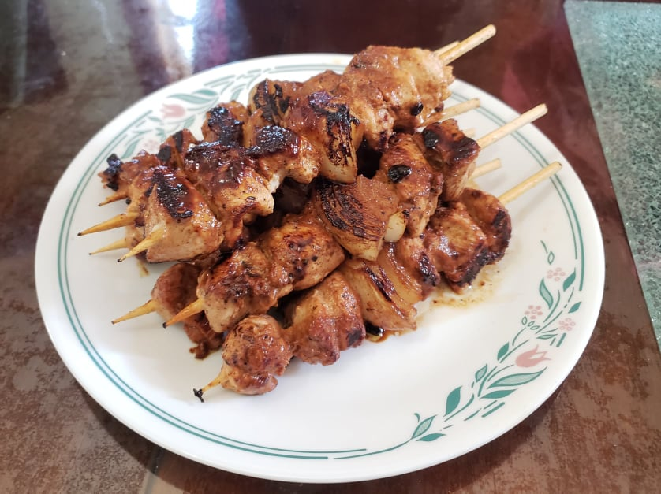

Shish Tawook

Ingredients:
Chicken Marinade:
- 2 lb Chicken breast, cut into 1 1/2 inch cubes
- 1/2 cup Plain yogurt
- 1/4 cup Lemon juice, about 1 Lemon
- 1/4 cup Olive oil
- 6 cloves Garlic, minced
- 1 tbsp Tomato paste
- 1 tsp Paprika
- 3/4 tsp Cinnamon
- 1/2 tsp Dried oregano
- 1/2 tsp Ground ginger
- 1 tsp Salt
- 1/4 tsp Black pepper
Other Ingredients:
- Optional: 1 Onion, cut in half and then quartered (8 pieces)
Instructions:
- Combine the marinade ingredients together and let marinate overnight.
- Thread the chicken onto the skewers right before grilling. Add a piece of onion to the middle of each skewer if using.
- Grill on medium heat for 5-8 minutes on each side.
- Serve on its own or with pita bread.